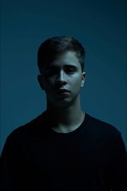
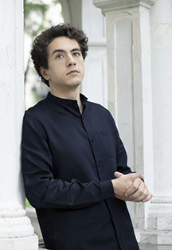

Афиша Саранск

- Концерты
- Спорт
- Театр
- Детям
- Купить билет

RAMIL' - 03.05 / САРАНСК / СК "МОРДОВИЯ"
3 МАЯ 19:00
СК "МОРДОВИЯ" - СК МОРДОВИЯ
Стоимость билетов: 1 000 Р.
Презентация нового альбома Ramil' в Саранске!
3 мая на сцене СК "МОРДОВИЯ", выступит автор нашумевших треков, таких как "Levi`s", "Падали", "Вальс", "Сияй", "Хочешь со мной", "Вся такая в белом", "Ау", "Бомбалейла"
Музыка Ramil' — это смелый и резкий поп, представляющий новейшую волну российской поп-музыки, которая зарождается не в дорогих студиях и радиостанциях, а в историях Instagram и аудио Вконтакте.
Вышедший в декабре альбом «Сияй» набрал 2 миллиона прослушиваний Вконтакте всего за 14 часов, а за неделю - 7 миллионов!
Ждём тебя на концерте!
КОНСТАНТИН ЕМЕЛЬЯНОВ
6 АПРЕЛЯ 19:00
РЕСПУБЛИКАНСКИЙ ДВОРЕЦ КУЛЬТУРЫ ,
Пролетарская ул., 39, Саранск, Респ. Мордовия, 430000
Стоимость билетов: 300 Р
Звезды 21 века.
Вечер фортепианной музыки.
Лауреат международных конкурсов Константин Емельянов (фортепиано).

Сейчас в кино
test